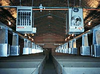

|
|

|
|
|

|
Housing
Confinement systems are the most common choice for Saskatchewan pork producers. Barns in which animals are housed year round, have been successfully used not only to protect animals from cold winters, but also to reduce the incidence of many diseases. Disease control is maintained by disinfecting all materials brought into the barn. Even people entering the barn are required to shower, and are provided with a change of clothes to ensure they do not expose animals to any infectious agents which may be carried on their skin or clothing.
|
Within the barn, animals are group-housed in pens with slatted floors. Typically, concrete is used as the dominant material. Concrete floors and walls are very resistant to damage by animals and equipment. Slatted floors can be used within pens to permit manure and water to drain into a large pit so animals remain cleaner.
|

Ventilation
Ventilation and fresh air supply are very important concerns when any type of livestock is intensively managed. Each room must be properly ventilated to remove moisture, toxic gasses, moisture and odour. Proper use of large single speed and variable speed fans can remove dirty air, reducing the incidence of respiratory disease amongst animals and workers. During the winter, ventilating a barn will remove much of the heat. To reduce heat loss, it is essential that fresh air brought in is well distributed throughout the barn. Efficient replacement of dirty air will reduce the amount of air which must be moved through the building, and therefore permit more heat to remain for the animals. This building has natural ventilation. Note the large fans located on the ceiling of the building. |
Pen Design
Pens design is usually a result of pig behavior. Pigs are very smart animals, and typically assign function to areas of their living space. They prefer a single area for sleeping, typically the most comfortable. Another area is used for dunging. The dunging area is usually where water nipples will be located. Water spilled on the floor will make this a cold place to lay and thus it is unsuitable as a sleeping area. Feeders should be located away from the water supply, and away from the sleeping area. If located in the sleeping area, sleeping animals will restrict other animals from accessing feed.
If feeders and water nipples are poorly situated within a pen, pigs will not establish dunging and sleeping areas. The pen will rapidly become dirty and wet. Food may become contaminated and more labour will be required to keep the pen clean.
|
Breeding
The swine industry makes use of both crossbred and purebred animals. By using crossbred animals, producers can take advantage of the benefits of hybrid vigor which include increased litter sizes and improved milking ability. Breeding sows are most commonly based on Landrace and Yorkshire crosses, and are bred to Hampshire or Duroc males. The resultant piglets are rapidly growing, efficient users of feed, and produce a superior carcass compared to other animals. These animals are in gestation stalls.
|
The pig has a very short generation time. As little as 11 months are required from the birth of a gilt (a female pig yet to produce a litter) to the birth of her first litter. From breeding to farrowing, only 115 days are required (3 months, 3 weeks, 3 days). This short time permits the pork industry to rapidly adapt to changes in market demand, or production technology. Rapid turnover of breeding stock is a necessity for any commercial producer to maintain a level of high quality genetics. In any breeding herd, about 40% of the female breeding stock are replaced each year. The animals chosen to replace culled sows are largely selected from within the herd. Additional animals may be purchased from purebred breeders or from breeding companies.
As with cattle, pigs can be bred by artificial insemination. Using artificial insemination or naturally breeding, the average sow will produce a litter of 8-13 piglets. If managed properly, the sows short gestation period of 115 days permits her to have 2 litters per year. The goal of the breeding herd should be to produce as many piglets as possible per sow per year. Therefore, factors affecting the reproductive efficiency are given careful attention.
There are many factors which will reduce the size of the litter. The most important factor is the time of breeding. The unfertilized eggs have a very short lifespan of only 2-3 hours. Observing pigs for breeding receptive behavior is important for the synchronizing the presence of sperm and the eggs to maximize the number of piglets produced in each litter. Stress can also be another factor which can reduce litter size. Calm and quiet handling of sows, especially when breeding, will help reach the maximum potential litter size.
The number of litters per sow per year is also important for improving breeding performance. Decreased litters per year can be a result of a long lactation phase, or delays in rebreeding of the sow as a result of miscarriages, abortions or missed heats. Weaning piglets at 3 - 4 weeks of age is the optimum time to avoid delay of rebreeding.
|
Farrowing and Nursing
Farrowing involves the birth of a litter of piglets and raising them for 3-4 weeks until they are weaned from the sow. Originally, small farms that raised pigs provided straw and bedding for the sow when it was time for her to give birth. A comfortable warm spot was all that was provided. Often, sows would crush their piglets accidentally, or intentionally kill them. Today, commercial operations breed 500 to 1000 sows throughout the year. Using this method of farrowing would be a very expensive. The cost of bedding, additional barn space, and high piglet mortality have resulted in the development of confinement systems.
The most common style of confinement system used in Saskatchewan is the farrowing crate. This is a small pen which restricts the movement of the sow. Bars running the length of the crate provide a safe place for the piglets where they will not be crushed when the sow lies down. A heat lamp can be provided for additional warmth. Creep feed for the piglets can also be provided. The sow will spend all of her time in this crate. Food and water are provided to ensure she gets adequate nutrients for milk production and to maintain her body weight. The farrowing crate does not permit the sow to exercise. This is one of the main concerns of animal welfare activists. In some countries, the use of farrowing crates is prohibited and alternative systems are being developed.
|
After piglets are born, they usually have their curly tails docked, and their eye teeth removed. Their eye teeth are very sharp, and piglets will chew on other objects when they are bored. Removing these sharp teeth will protect the sow's teat from injury and will minimize biting of any sibling's tail. Piglets may also receive an injection of minerals, particularly iron, and male piglets will be castrated before weaning if they are not to be used for breeding purposes.
|
Weaning and Finishing
Weaning is done when the piglets are 3 - 4 weeks of age. These piglets are weaned and 6 weeks of age. As they mature, gaining weight and growing in size, they will be moved a number of times to barns which are better suited to their development. As the piglets get larger, they are more capable of keeping warm. The temperature of the barn can be regulated, and will decrease as the pigs get larger. While the other barns are still heated, none will be as warm as the farrowing room. Some producers even choose to finish their pigs in outdoor sheds which have lots of straw bedding. Here the only source of heat is that produced from the fermentation of the manure pack.
Stages of development include:
- Suckling (4 weeks) Birth - Weaning (5/10kg)
- Nursery (4 weeks) Weaning - 25 kg
- Grower (8 weeks) 25 - 50 kg
- Finisher (8 weeks) 50 - 100 kg
Approximately 24 weeks are required to raise a pig from birth to an acceptable slaughter weight. Low quality genetics, poor nutrition, inferior environments, disease and poor handling techniques can delay the pig's development and reduce the profitability of pork production.
|

Nutrition
Pigs, unlike cattle, are unable to make use of much of the fibre found in forages and plants. Because of this, their diet is based mainly on grains and oilseeds. Swine diets are commonly formulated by a computer program which will determine the best combination of protein, energy, minerals and vitamins at the most economical proportions based on the composition of available feedstuffs.
Energy is found in the form of fat or carbohydrates. Cereal grains are rich in carbohydrate and supply sugars which are metabolized and used as energy for the formation of new tissues including muscle and fat in addition to milk during lactation. Surplus energy fed to the pig will be stored as fat which can be metabolized at a later time for additional energy.
Barley is the most common cereal grain used as an energy source in all livestock rations in Saskatchewan. In other parts of North America, corn is commonly used.
|
Protein is another dietary component of great importance. Protein is required for the growth of muscle and organs, the production of enzymes, hormones and milk. Cereal grains, oilseed meals and animal byproducts can be used to meet the animal's protein requirements. Cereal grains are often too low in protein to be used alone. They may be mixed with oilseed meals such as canola meal and soybean meal. Animal byproducts such as meat and blood meal, fish meal, dried skim milk and whey may also be used. Animals byproducts are generally very expensive but of very high quality. Protein nutrition of the pig has been receiving a great deal of attention. Requirements for individual amino acids have been determined, and it is now possible to include synthetic amino acids in swine rations. This hog feeder delivers feed to the livestock.
Minerals and vitamins are included in small amounts in swine rations. They are important because they are used for the development of strong bones and teeth. They are also required for muscle contraction, hormone function and blood clotting. Many metabolic processes depend on very small quantities of minerals and vitamins. Mineral and vitamin premixes are usually purchased from a feed company and can be very expensive. Like protein and energy, the amounts that are required will change as the pig matures.
|
|
|
|
|